Аудит интерфейса визуализатора
Цель владельца: всё легко воспринимается и нет шума. Проверено вживую на :4310 с картой korbor-all (91 экран, 314 роутов, 74 таблицы, 29 эпох) Playwright-ом: 1600×1000, 1024×700, 768×1000, тёмная и светлая темы. Код не менялся.
Десять правок с наибольшей пользой
- Панель экрана: крестик, Esc и закрытие при смене вида
Сейчас её нельзя закрыть, и она закрывает API, базу, документацию и сравнение.
- Карточка экрана в покое — только название и путь
Иконки, бейджи и размеры показывать при наведении и выборе. Это самый частый экран, и шума на нём больше всего.
- Граф документации по умолчанию без файлов
Около 40 узлов (эпохи, заметки, руководства) вместо 544; файлы открываются по клику.
- Настройки — человеческим языком, входы — отдельным листом
Убрать pin/warm/unmount/proxy/CSP с глаз, профили входа вынести из низа настроек.
- Шапка: убрать «Источники» и лишнюю крошку, на узком — меню
Каталог уже есть в селекте, крошка повторяет вкладку, на 768 px кнопки уходят за край.
- Обзор всей карты: крупные подписи при отдалении
На полном масштабе сейчас 91 нечитаемый прямоугольник.
- Понятные ошибки без дубля
Вместо «Unexpected token '<'…» — что случилось и что делать; тост не повторяет баннер.
- API: покрытие свернуть, значки только у отклонений
Пять полос метрик, пары иконок у каждой строки, повтор пути группы и курсив.
- Рёбра и служебные бейджи
Подписи рёбер — только у выбранного экрана; «live/warm» убрать, оставить проблемы.
- Документация без повторов
Статус «готово» у каждой эпохи, файл + заголовок, двойной список багов, чипы с нулём, неотрисованное ~~.
Шапка и тулбары

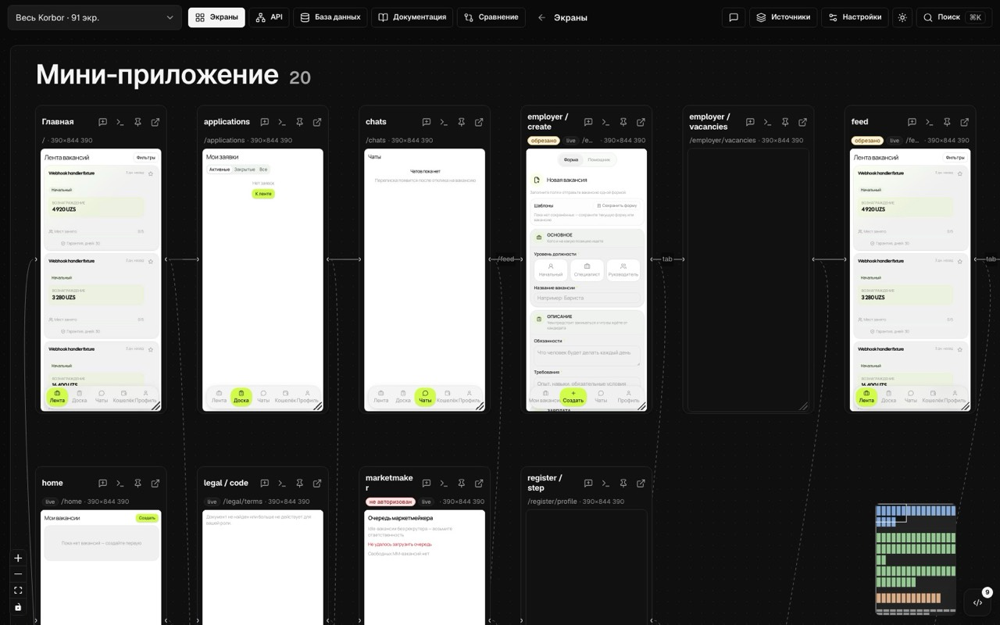

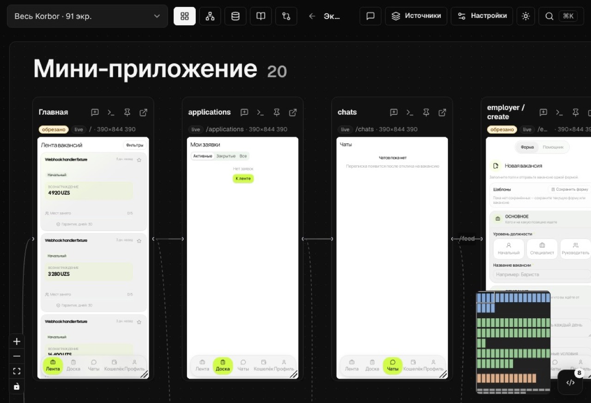
| сильно мешает | На ширине 768 px шапка не помещается: её содержимое 954 px, «Настройки», тема и «Поиск» уходят за край без прокрутки. | Ниже 900 px собрать «Источники», «Настройки» и тему в одну кнопку-меню, крошки прятать первыми. |
| заметно | «Источники» повторяет селект карты слева: тот же каталог, «Открыть JSON» и «Очистить карту». Два входа в одно и то же. | Убрать кнопку «Источники», оставить всё в селекте карты. |
| заметно | Крошка «← Экраны» дублирует активную вкладку «Экраны» в той же строке. | Показывать крошки только когда выбран объект глубже вида (экран, роут, таблица, эпоха). |
| заметно | Справа пять кнопок одного веса: замечания, источники, настройки, тема, поиск. Главное действие (поиск) не выделено. | Поиск оставить с подписью и ⌘K, остальное сделать иконками без рамок. |
| мелочь | На 1024 px вкладки видов становятся иконками без подписей, а «Источники» и «Настройки» подписи сохраняют. Прятать надо наоборот. | Сначала прятать подписи второстепенных кнопок, вкладки видов держать с текстом. |
| мелочь | «Весь Korbor · 91 экр.» — сокращение. | Писать «91 экран» или убрать число из селекта. |
Пустое состояние и ошибка загрузки

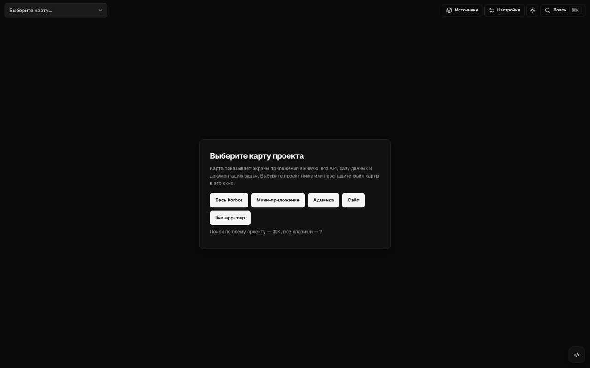

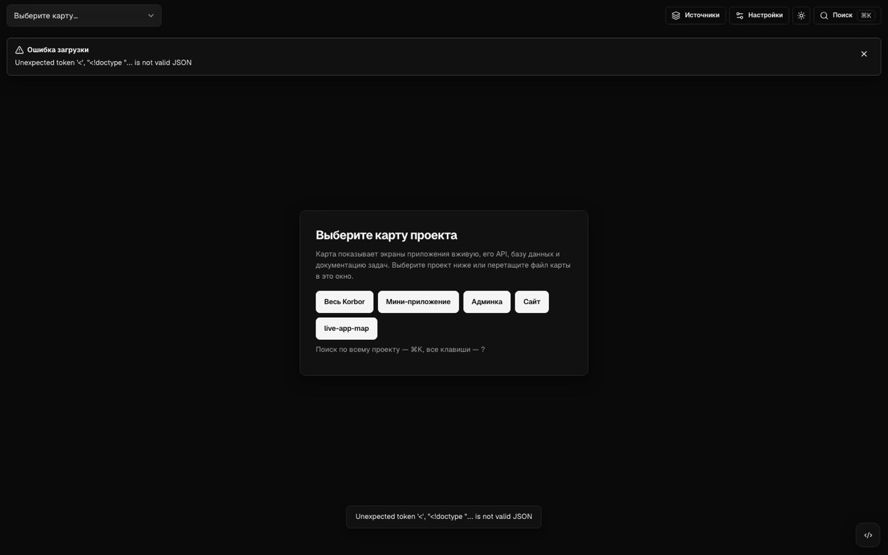
| сильно мешает | Ошибка загрузки — сырое исключение парсера: «Unexpected token '<', "<!doctype "... is not valid JSON». Один и тот же текст показан дважды: в баннере и в тосте. | Человеческая фраза: «Карта /maps/nope.liveappmap.json не найдена: сервер вернул страницу вместо JSON» и что сделать. Тост при баннере не показывать. |
| заметно | Пять одинаковых белых кнопок карт, «live-app-map» переезжает одна на вторую строку. Не видно, что внутри каждой карты, ни одна не рекомендована. | Список строк «название — 91 экран, API, база, документация», первая карта выделена как основная. |
| мелочь | Без карты в шапке видны «Поиск ⌘K» и «Настройки», которые ещё ничего не делают. | Без карты оставить селект карты и тему. |
Граф экранов


| сильно мешает | Карточка экрана перегружена: название, четыре иконки (замечание, лог, закрепить, открыть), строка бейджей «обрезано · live · / · 390×844 390», а у выбранной ещё пять кнопок ширины 360…1024. Размер повторён дважды: «390×844 390». | В покое только название и путь. Иконки, размер и кнопки ширины показывать при наведении и у выбранной карточки. Хвост «390» убрать. |
| сильно мешает | Вся карта целиком (91 экран) не читается: подписи в 4 px, почти все карточки админки — пустые тёмные прямоугольники, между секциями большие пустые рамки. | При отдалении показывать крупные названия секций и экранов вместо превью; пустую карточку подписывать названием экрана крупным шрифтом. |
| заметно | Подписи рёбер «tab», «/feed», «/applications» налезают на карточки и друг на друга, пунктиры тянутся поверх всех колонок. | Подписи рёбер показывать только у выбранного экрана, остальные рёбра сделать бледнее. |
| заметно | Служебные бейджи «live», «warm» на карточках непонятны новичку и не нужны для чтения карты. | Оставить только бейджи-проблемы («не авторизован», «обрезано»), состояние iframe перенести в лог. |
| заметно | Названия экранов — сырые куски пути («employer / create», «legal / code»), «marketmake r» переносится посреди слова. | Перенос по словам с многоточием; брать заголовок экрана, если он есть. |
| мелочь | Заголовок секции «Мини-приложение 20» (около 48 px) — самый крупный элемент интерфейса, крупнее шапки и карточек. | Уменьшить до 28–32 px. |
Экран в панели

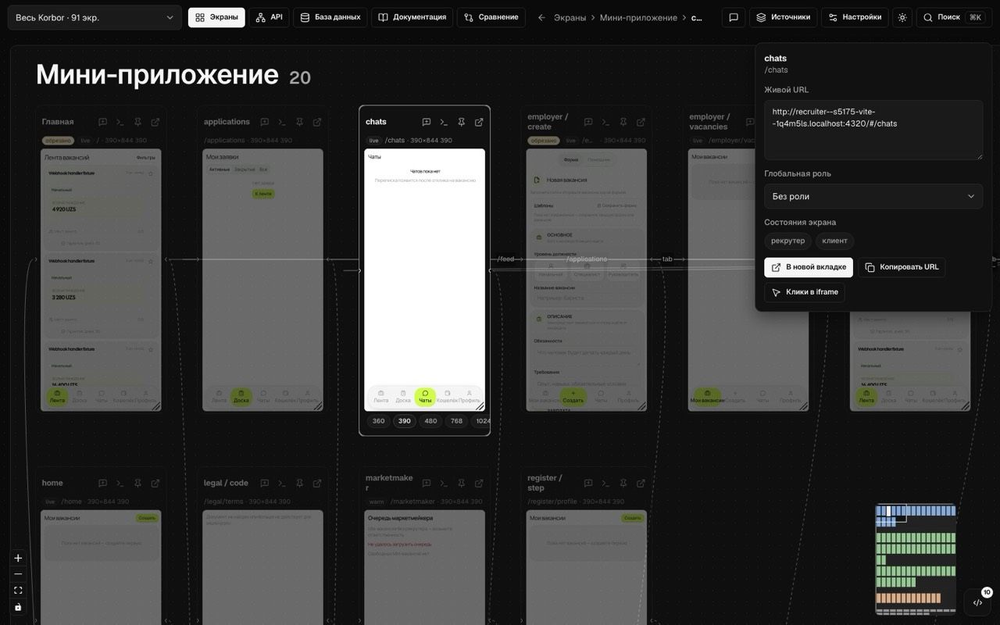

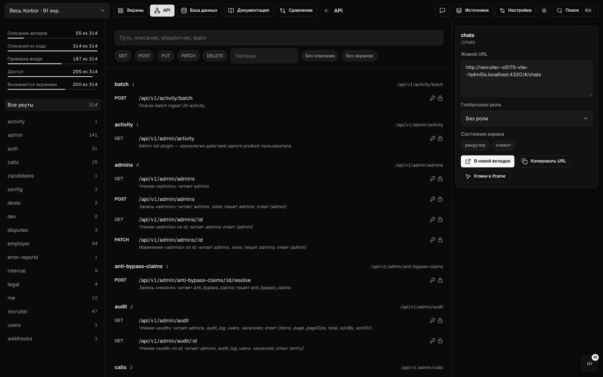

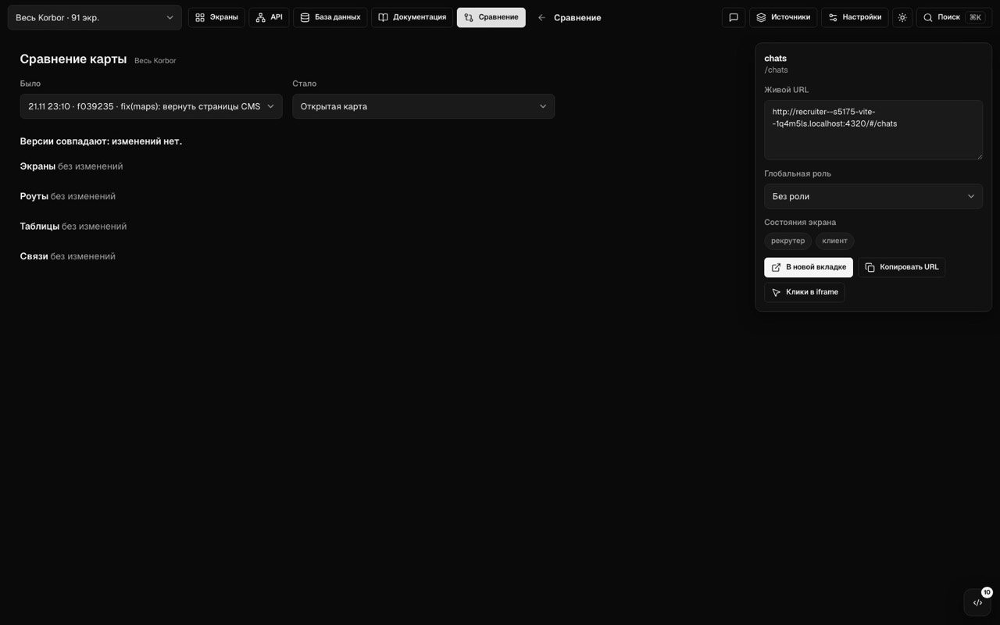
| сильно мешает | Панель экрана нельзя закрыть: крестика нет, Esc закрывает только поиск и справку (use-hotkeys.ts:32). Панель остаётся на видах «API», «База данных», «Документация», «Сравнение» и закрывает их содержимое: на «Документации» — блок «Связи», на «API» — карточку роута. | Крестик в шапке панели, Esc, снятие выбора при смене вида. |
| заметно | «Живой URL» — поле на четыре строки со служебным адресом шлюза (recruiter--s5175-vite--1q4m5ls.localhost:4320). Это шум: кнопка «Копировать URL» рядом есть. | Одна строка с обрезкой; поле убрать. |
| заметно | Роль задаётся в трёх местах: «Глобальная роль» в панели, «Состояния экрана» (рекрутер, клиент) там же и «Роль (miniapp)» в Настройках. | Один переключатель роли в панели экрана, из Настроек убрать. |
| мелочь | «Клики в iframe» — жаргон. | «Нажимать внутри экрана». |
Сервисы бэкенда

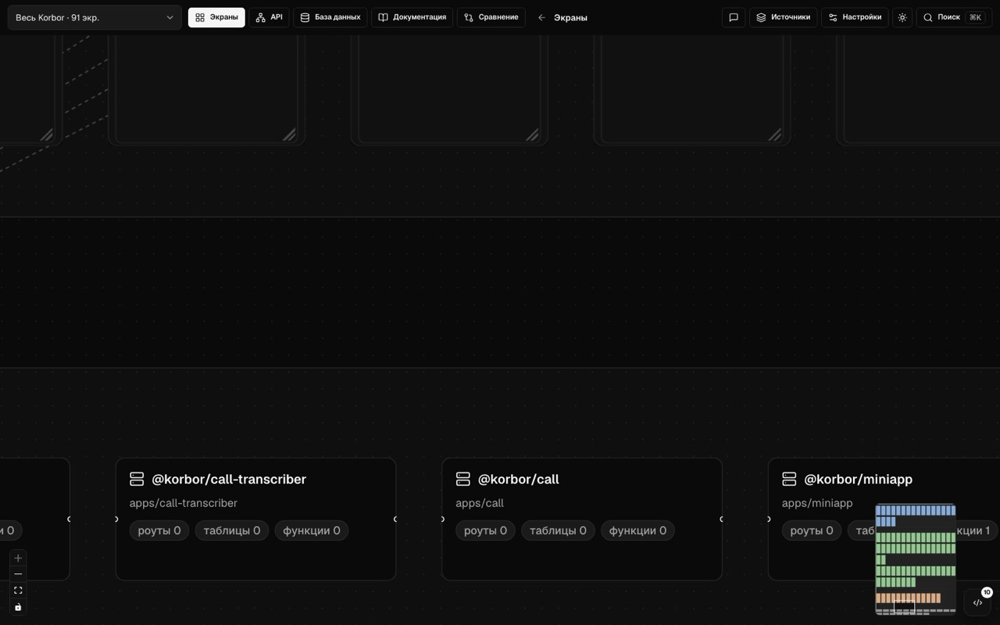
| заметно | У карточек сервисов «роуты 0 · таблицы 0 · функции 0»: три нуля на карточку повторяются по всей секции. | Нулевые счётчики не показывать; сервис без данных — одна строка. |
| заметно | Между секциями сервисов и экранов — пустая полоса в половину экрана. | Сжать отступы между секциями до шага сетки. |
Мини-карта и кнопка логов

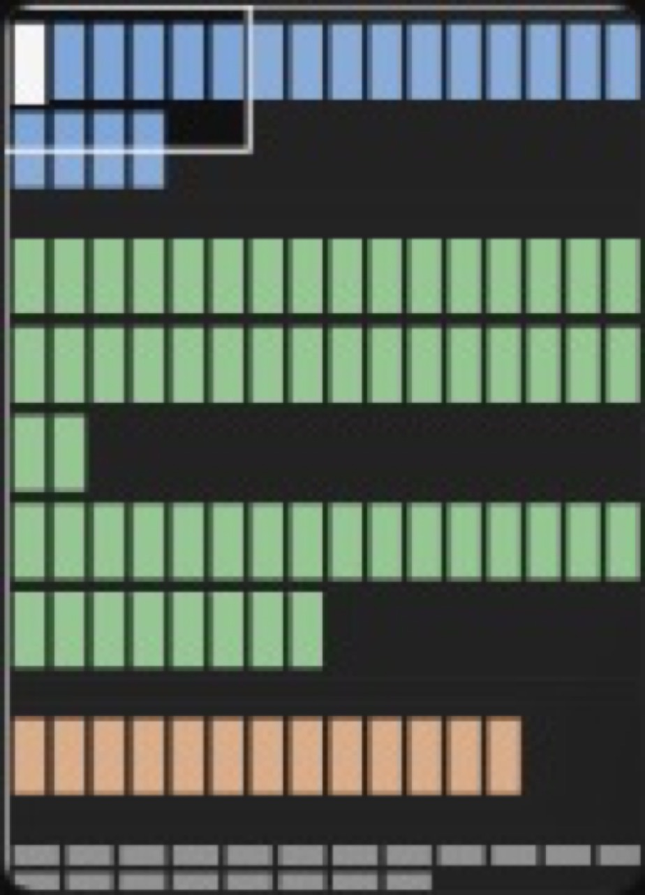

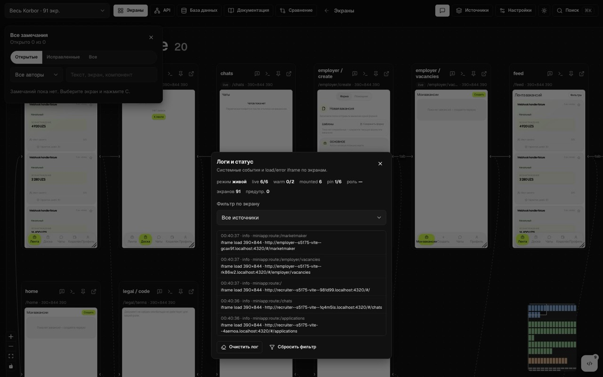

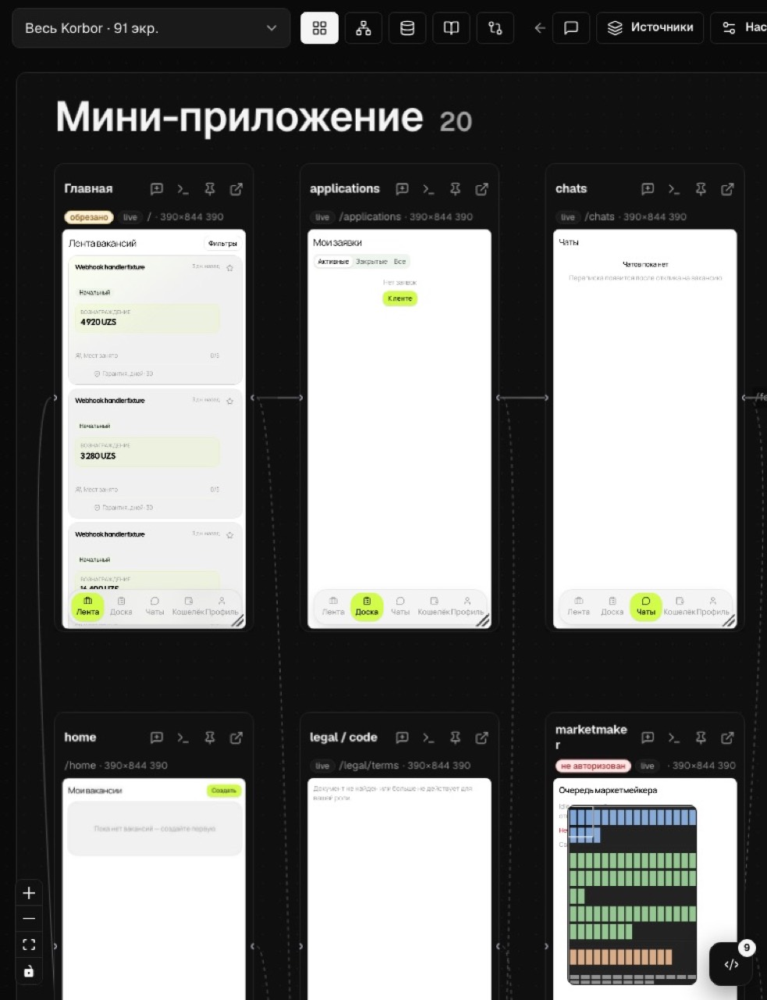
| заметно | Цветные блоки мини-карты (синий, зелёный, оранжевый) без подписей, и эти цвета больше нигде в интерфейсе не встречаются. | Подписать секции в мини-карте или взять монохром с выделением текущей секции. |
| заметно | На 768 px мини-карта закрывает карточку экрана; рядом кнопка логов налезает на её угол. | На узком окне сворачивать мини-карту в кнопку. |
| заметно | На кнопке логов «</>» число 9, 10, 14 — меняется само, похоже на счётчик ошибок, хотя это просто записи лога. | Бейдж только при ошибках и предупреждениях, иначе без числа. |
| заметно | В «Логах и статусе» служебный английский: «live 6/6 warm 0/2 mounted 6 pin 1/6». Окно не закрывается по Esc и перекрывает клики. | «Живых экранов 6 из 6, закреплено 1»; Esc закрывает окно. |
API-документация

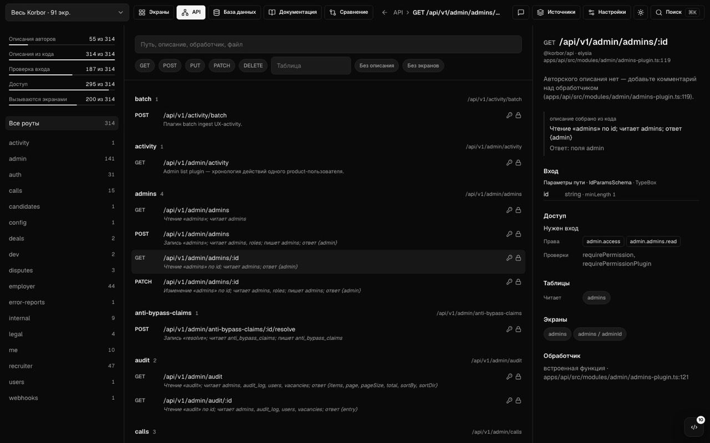

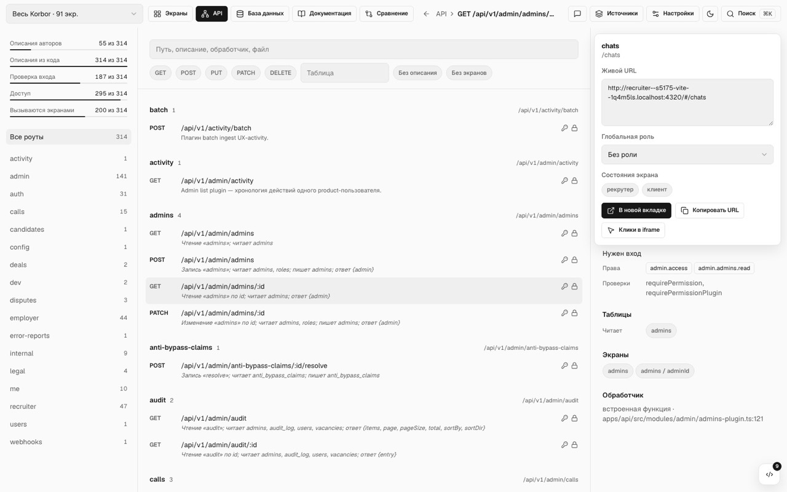

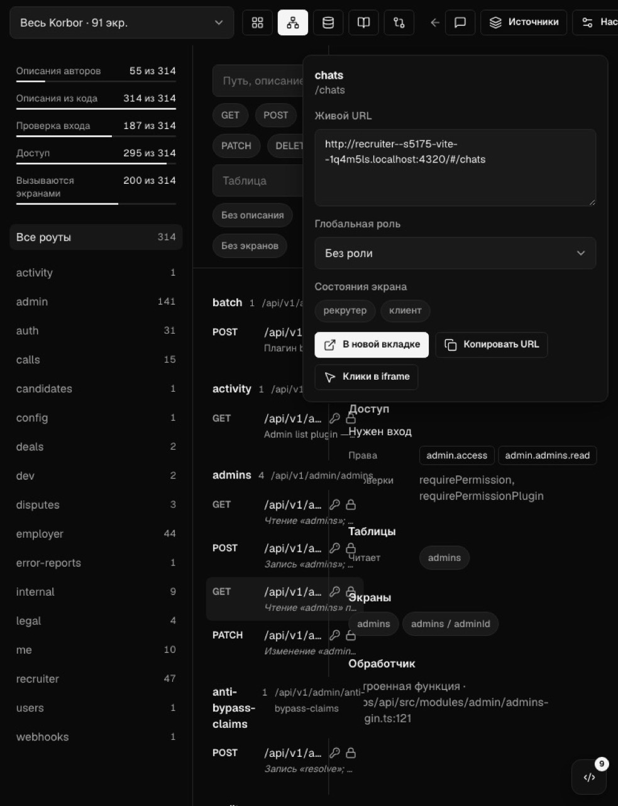
| сильно мешает | На 768 px карточка роута ложится поверх списка: два слоя текста друг на друге. | Ниже 900 px открывать карточку на месте списка с кнопкой «Назад». |
| заметно | Пять полос покрытия («Описания авторов 55 из 314» и другие) стоят над навигацией и видны всегда. Это метрики для аудита, а не для чтения API. | Свернуть в одну строку «Покрытие документации» с раскрытием. |
| заметно | У каждой строки две одинаковые иконки (ключ и замок) без подписи. На сотнях строк они одинаковы и превращаются в узор. | Показывать значок только у отклонения, например у роута без проверки входа. |
| заметно | Справа у каждой группы повторён префикс пути (/api/v1/admin/admins), который уже есть в каждой строке. | Убрать. |
| заметно | Описания набраны курсивом, а собранные из кода («Чтение «admins»; читает admins; ответ {admin}») и авторские вида «W3-debt patch (W4 zone), блок 069…» выглядят одинаково. | Прямое начертание; описание из кода — серым; служебные ссылки на блоки не показывать в списке. |
| мелочь | Карточка роута начинается с указания разработчику «Авторского описания нет — добавьте комментарий…». | Перенести вниз мелким текстом. |
База данных

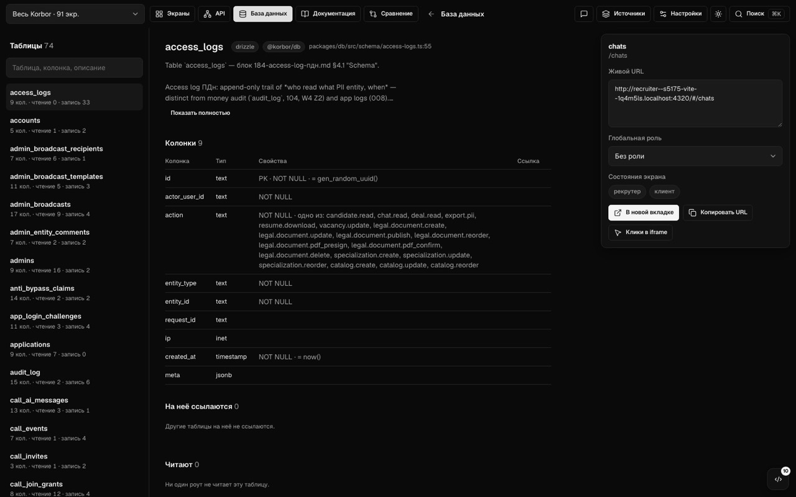

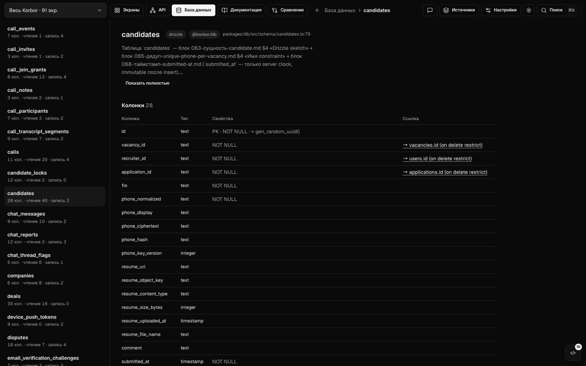
| заметно | У всех 74 строк списка подпись «9 кол. · чтение 0 · запись 33». Три числа на строку создают плотный серый фон. | Оставить одно число или показывать подпись при наведении. |
| заметно | Описание таблицы — сырые ссылки на блоки: «блок 063-сущность-candidate.md §4 «Drizzle sketch» + блок 065…». | Ссылки на блоки убрать в раскрытие «Источник»; первой строкой — смысл таблицы. |
| заметно | Колонка «Ссылка» почти всегда пустая и тянет таблицу на всю ширину. | Внешний ключ писать в «Свойствах», колонку убрать. |
| мелочь | Бейджи «drizzle» и «@korbor/db» у заголовка. | Убрать или перенести в строку с путём к файлу. |
Документация и эпохи

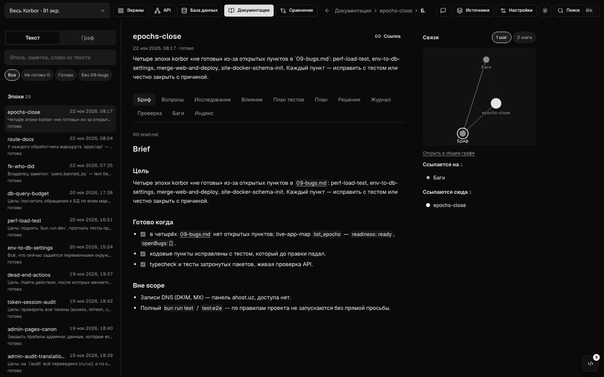

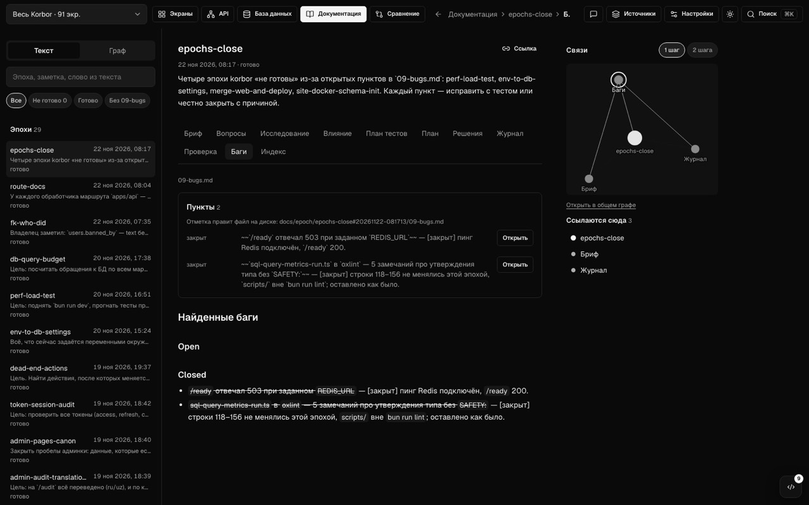

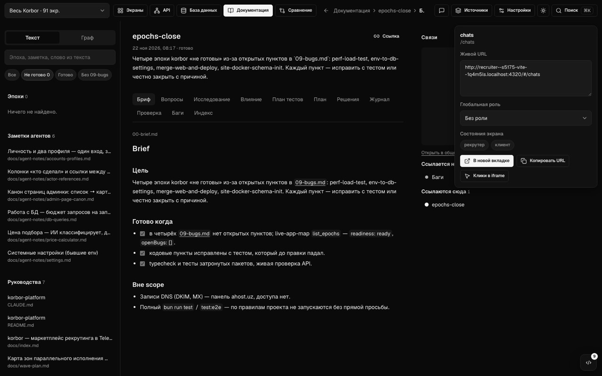
| заметно | У каждой из 29 эпох в списке отдельная строка «готово», у всех одинаковая. | Показывать только «не готово». |
| заметно | Чип «Не готово 0» нажимается и ведёт в «Ничего не найдено». | Чипы с нулём скрывать. |
| заметно | Одно и то же трижды: вкладка «Бриф», имя файла «00-brief.md» и заголовок «Brief». Вкладок 11, в два ряда. | Убрать имя файла и повторный заголовок; вкладки в одну строку с прокруткой. |
| заметно | Во вкладке «Баги» пункты показаны дважды: блоком «Пункты 2» и ниже тем же markdown «Найденные баги / Open / Closed». В блоке «Пункты» зачёркивание не отрисовано: видно «~~`/ready` отвечал…~~». | Оставить только блок «Пункты», зачёркивание рисовать. |
| мелочь | Мини-граф «Связи» из трёх точек занимает 260 px, а то же самое ниже уже есть списком. | Убрать мини-граф, оставить списки «Ссылается на» и «Ссылаются сюда». |
Граф документации и эпох

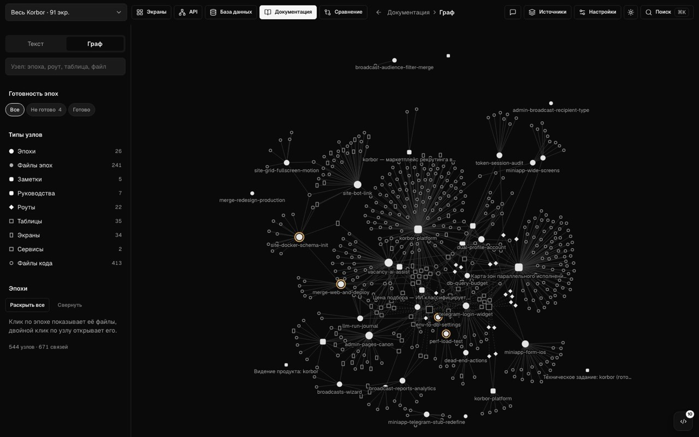

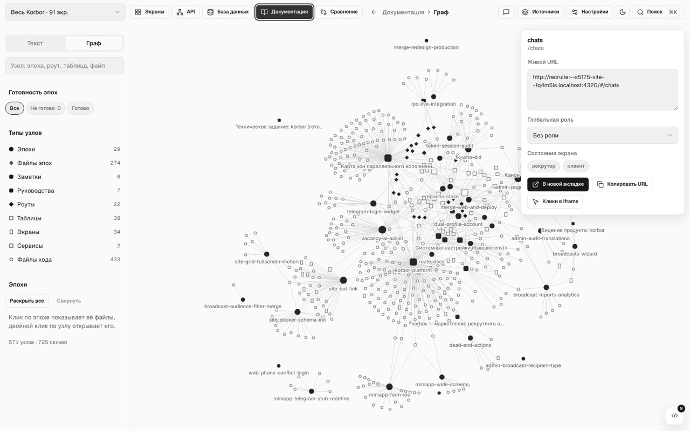
| сильно мешает | Сразу 544–571 узел: клубок, подписи налезают, 413 файлов кода кружками закрывают эпохи. | По умолчанию показывать только эпохи, заметки и руководства (около 40 узлов); файлы эпох и кода — по клику на эпоху. |
| заметно | Цифры расходятся. В тексте «Эпохи 29, Не готово 0»; в графе при одном открытии «Эпохи 26, Не готово 4, 544 узлов», при другом «29, 0, 571 узлов». | Проверить, что граф и список строятся из одних данных и в один момент. |
| мелочь | Формы узлов (кружок, квадрат, ромб размером 6–8 px) почти не различаются, легенда не помогает. | Различать типы размером и подписью, а не формой. |
Поиск ⌘K


| мелочь | Справа у роутов путь к файлу или «блок 050-фильтры-ленты-вакансий.md §2/§…» — шум в строке результата. | Путь показывать только у выделенной строки. |
| мелочь | При пустом результате остаётся действие «Оставить на холсте экраны «zzzqqq»», которое даст пустой холст. | Скрывать, если экранов по запросу нет. |
Сравнение

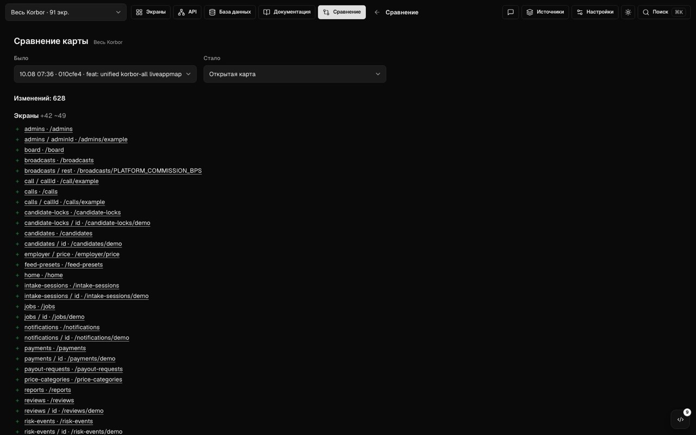
| заметно | По умолчанию сравниваются последний коммит и открытая карта: первый экран — «Версии совпадают: изменений нет» и пустота. | По умолчанию брать ближайший коммит, в котором карта отличается. |
| заметно | 628 изменений одним длинным списком подчёркнутых ссылок; «+42 ~49» — символы без пояснения. | «добавлено 42, изменено 49», группы свёрнуты, без подчёркивания. |
Настройки и сессии (профили входа)

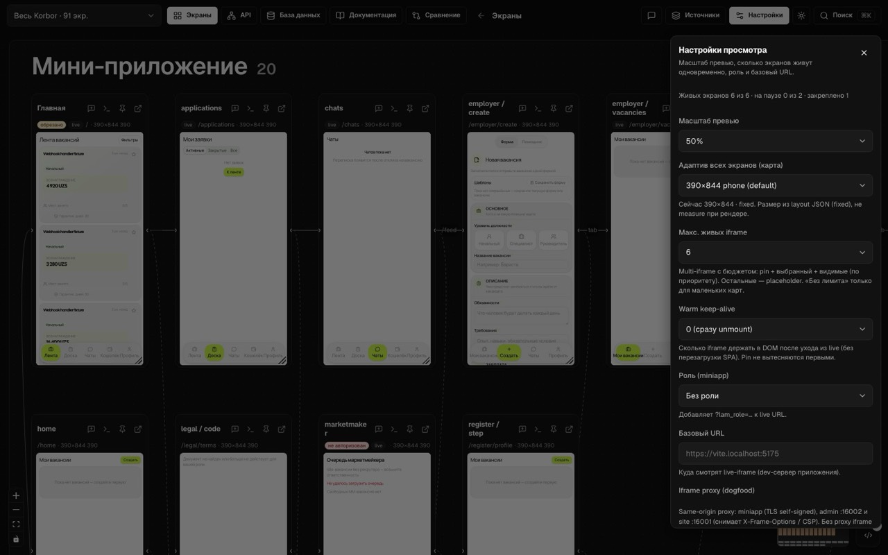

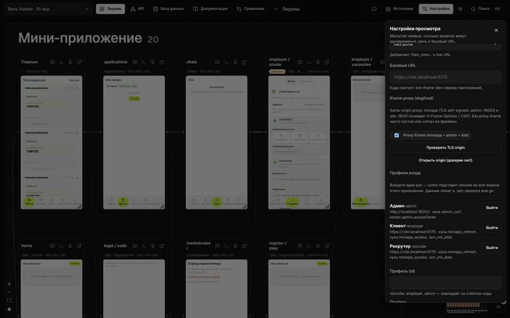

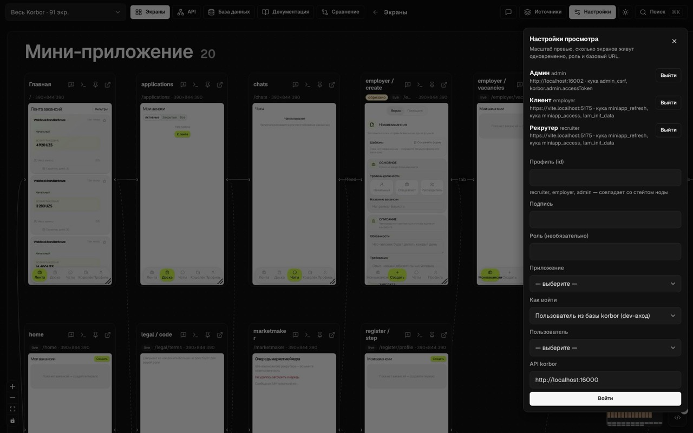
| сильно мешает | Настройки написаны служебным языком: «Multi-iframe с бюджетом: pin + выбранный + видимые», «Warm keep-alive 0 (сразу unmount)», «fixed. Размер из layout JSON (fixed), не measure при рендере», «Same-origin proxy… X-Frame-Options / CSP». | Перевести на русский по смыслу («Сколько экранов показывать вживую»), технические поля убрать в раскрытие «Для разработчика». |
| сильно мешает | Профили входа спрятаны в самом низу «Настроек просмотра» после прокси и TLS; у каждой строки куки «admin_csrf, korbor.admin.accessToken». Форма нового профиля на семь полей раскрыта всегда. | Отдельный лист «Входы»: строка «Админ — вошёл — Выйти», форма открывается кнопкой «Добавить вход». |
Тёмная и светлая тема

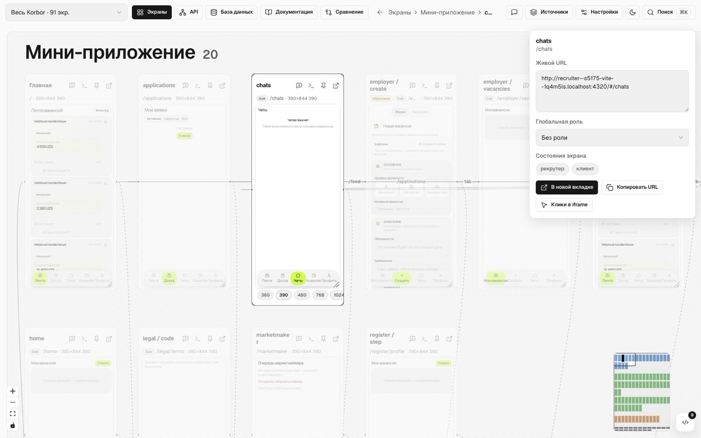

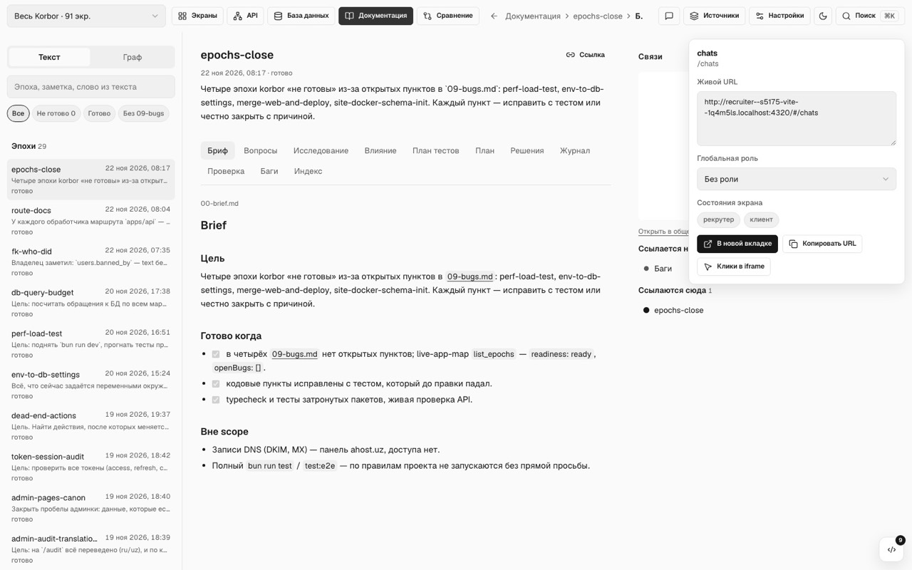
| заметно | В тёмной теме самые яркие пятна — белые превью живых экранов; рядом с ними тонкие обводки карточек почти не видны. | Обводку карточек на тёмном сделать на ступень светлее фона; превью невыбранных экранов немного приглушать (сейчас это сделано только при выборе). |
| мелочь | Тема по умолчанию тёмная, светлая включается кнопкой или T; обе цельные, светлых поверхностей в тёмной теме нет. | Без правок. |
Узкое окно

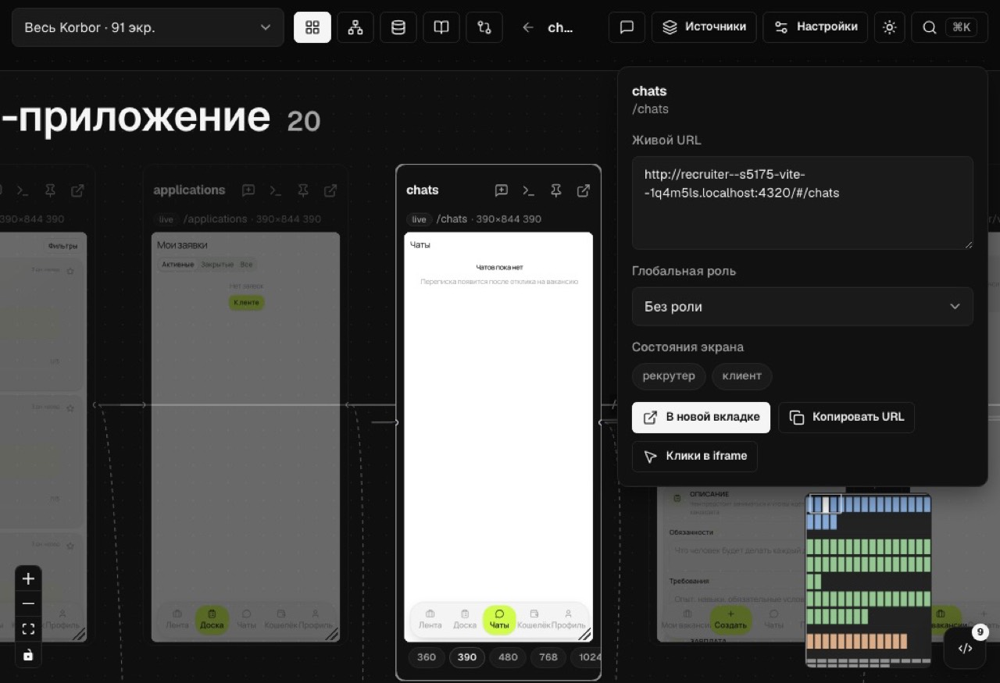

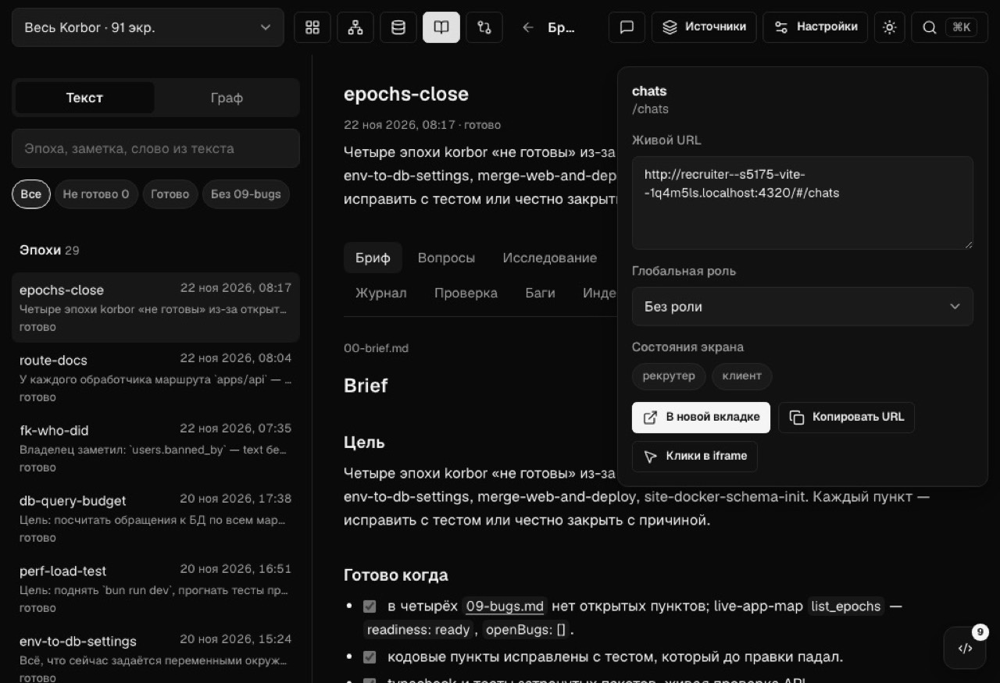

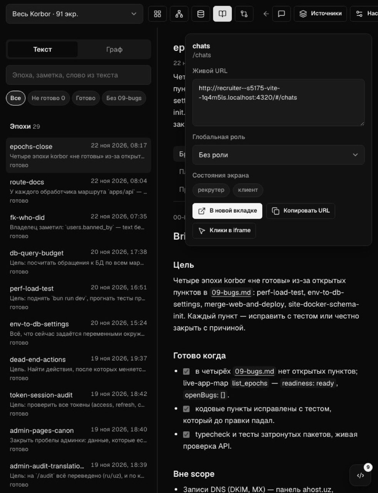
| сильно мешает | 768 px: шапка обрезана, карточка роута наезжает на список (см. API), мини-карта закрывает экран. | Свести шапку в меню, карточки открывать поверх списка во весь размер. |
| заметно | 1024×700: панель экрана занимает треть ширины и закрывает соседние экраны и контент других видов. | Панель уже (320 px) и закрываемая. |
На чём основан разбор: иерархию задают отступы, а не линии и бейджи; у числа есть подпись, но одинаковая подпись у каждой строки — шум; в тёмной теме — уровни поверхностей и неяркие обводки. Вкус владельца: один шрифт Medeo, без надзаголовков и номеров 01/02, без градиентных карточек. Темы базы design-expert: spacing-grouping, data-display, navigation, color-dark-theme, typography.
Замечания и голос
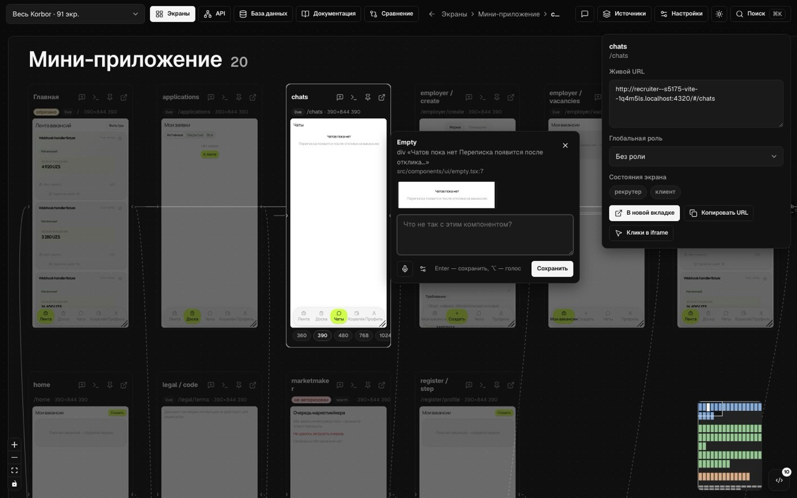
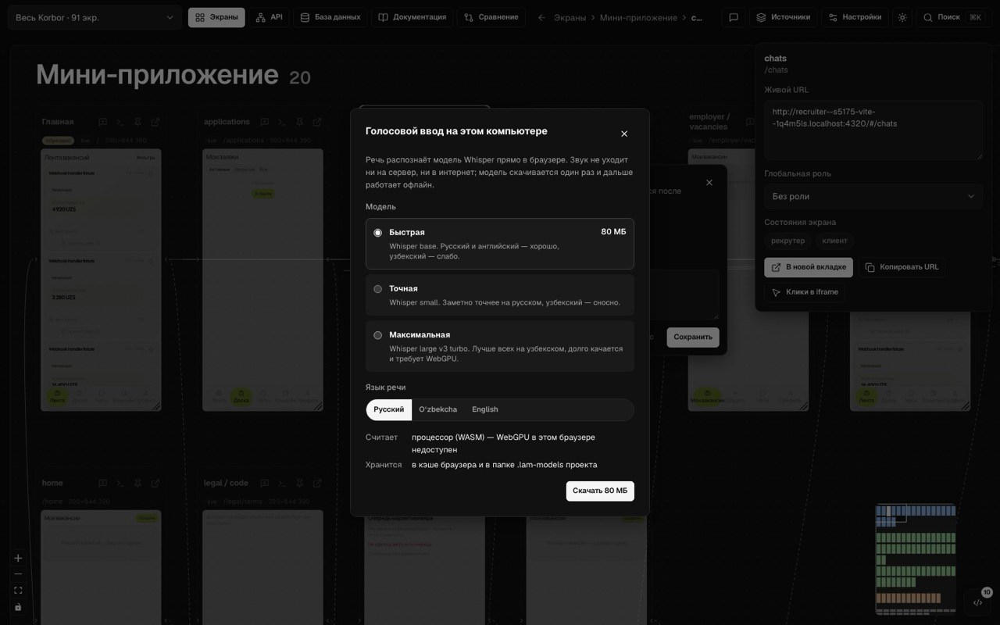
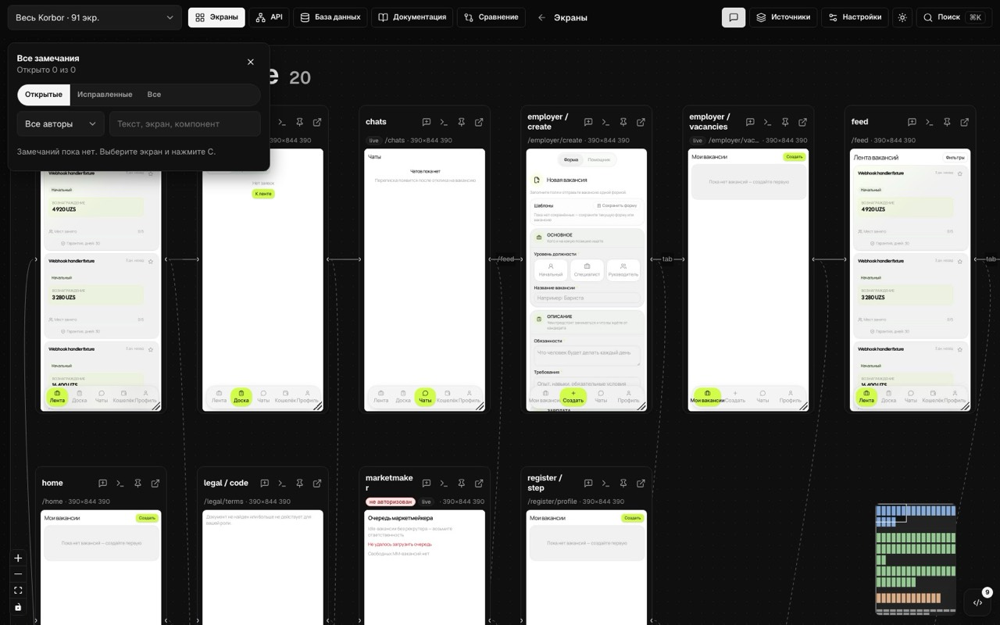